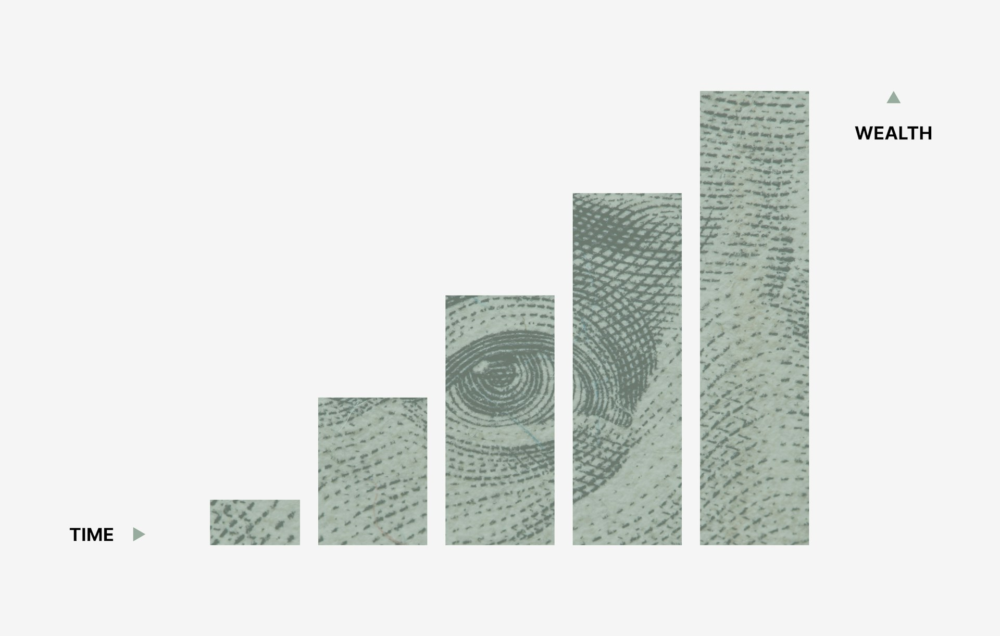

Invest smarter,
not just regularly.
Stop buying the same amount every month. Let the data tell you when to go bigger — and when to ease back.
Enter your asset and budget to calculate your DCA Score
Enter any ticker to see your DCA Score instantly — or try an example below
Your stocks,
always ready.
Tap any stock to instantly run a Smart DCA calculation with your saved budget. Signals update every time you refresh.
我的虛擬帳戶
4 easy steps to
invest like a pro.
No finance degree required — start whenever you're ready.
Your coworker swears this stock's about to pop. Or a headline catches your eye. But you're busy, and there's no time to dig into what's actually going on. DCAcafé does that homework for you, so you can tell at a glance if it's worth adding to your plan. Stick to your own pace, stay consistent with your DCA, and spend your time on what actually matters.

Especially when it drops.
go bigger.
Rank them.
Our AI formula is continuously optimized — your DCA strategy evolves with the market.
See how Smart DCA
would have performed.
Pick any ticker and compare Smart DCA against a benchmark over its full historical data. No guessing — just numbers.